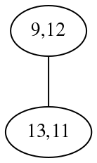

| 17 | 17 |
In 2012 I asked on cs.stackexchange if there is a better algorithm!
There is!
A pair of anagram words forms a graph
Nodes in the graph are matching pairs of letters
We'd like to match as many pairs as possible (bigger chunks!)
But not all pairs are compatible:

Edges express constraints:
If two matching pairs are incompatible, the nodes are connected
Find as many unconnected nodes as possible
| Next | |
Next |